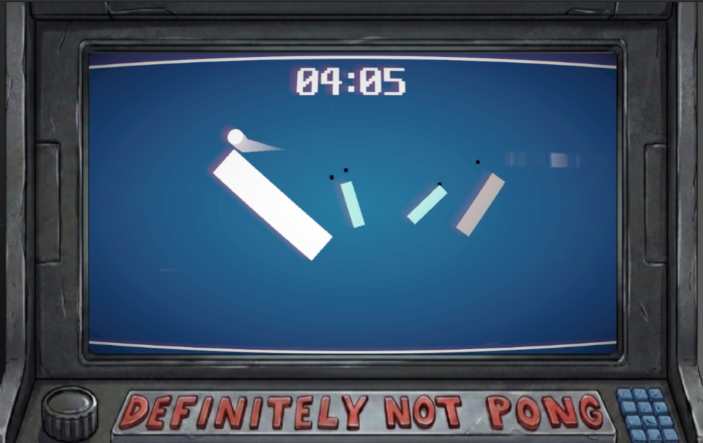

Back to Projects
Full Project
What Can Possibly Go PONG
If you replace every part of a ship one by one, until none of the original parts remain, will it be the same ship?
Overview
A Narrative Arcade game about four Developers building a timeless retro classic with a slightly modernized look, but it slowly transformed into something unrecognizable.
What begins as a clean classic retro experience evolves through ambition, insecurity, and the fear that “simple” isn’t enough.
Screenshots

Gameplay Video
My Role & Contributions
- Designed the core narrative and gameplay evolution as the game transforms
- Programmed the game logic, ensuring seamless transitions between different "versions" of the game
- Handled the narrative integration, making the mechanics reflect the developers' ambition and insecurity
Design Challenges
Retention, capturing interest to the end as a Jam entry. It was challenging to make sure players stayed engaged through all the transformations without getting frustrated or losing the thread of the original concept.